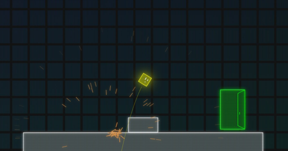
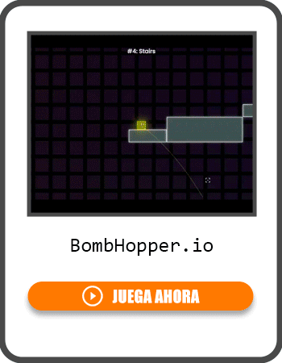

Introduction
BombHopper.io is a brilliant physics-based platformer that completely reimagines movement. Developed by Julien Mourer, this browser game strips away traditional WASD controls, forcing you to navigate a blocky yellow cube named Hoppi using only the recoil of your own bombs. What makes it uniquely addictive is the perfect blend of chaotic explosions and precision puzzle-solving. Instead of simply running and jumping, you must calculate angles, manage momentum, and blast yourself through intricate levels to reach the green exit door. Players love it because every successful level completion feels like a hard-earned triumph of physics mastery. It is a fast-paced, highly satisfying experience that turns explosive chaos into a beautiful, calculated dance.
Getting Started

Starting BombHopper.io is straightforward, but mastering it requires a shift in thinking. You control Hoppi, a yellow cube, using only your mouse. To move, simply aim with your cursor and left-click to drop a bomb. When the bomb explodes, it generates a massive recoil that blasts Hoppi in the exact opposite direction. For example, placing a bomb directly beneath you will launch you straight up, while placing it to your left will propel you to the right. Your primary objective in every level is to reach the glowing green door. In the early stages, the game introduces basic mechanics like bouncing off walls and using bombs to clear gaps. Remember that you cannot move without exploding something, so always plan your trajectory before clicking. Pay close attention to the environment, as spikes and bottomless pits will instantly reset your run. Take your time in the first few levels to understand the weight and arc of your jumps.
Basic Tips
1. Mind the Angle: The direction of the blast dictates your movement. To go up, place the bomb below you. To go forward, place it behind you. Always align your cursor perfectly with your cube's center for predictable vertical lifts. 2. Use Walls to Your Advantage: You don't always need to blast straight to the goal. Bouncing off a wall after an explosion can help you change direction mid-air and reach tricky platforms. 3. Watch Your Landing: Landing on the edge of a platform can cause you to slip off. Aim for the center of platforms to ensure a stable base for your next bomb placement. 4. Pace Your Explosions: Don't spam clicks. Wait until you have a clear line of sight and a solid plan for your next trajectory before detonating your next bomb.
Advanced Strategies

1. Mid-Air Chaining: The most crucial skill for 3-star ratings is placing bombs while still in the air. By timing your clicks perfectly, you can chain multiple explosions to drastically alter your trajectory, clear massive gaps, or correct a slightly off-course jump. 2. Momentum Redirection: Instead of just stopping and starting, use the recoil to maintain your speed. If you are moving fast horizontally, place a bomb slightly behind and below you to convert that horizontal speed into a massive vertical leap without losing your forward momentum. 3. Edge-Clicking for Precision: Placing a bomb exactly on the pixel-edge of your character's hitbox can yield sharper angles. This micro-positioning is essential for navigating tight corridors where a standard center-blast would cause you to crash into a ceiling. 4. Environmental Bouncing: Use the game's bouncy surfaces and angled walls to ricochet. Combining a bomb blast with a wall ricochet can save you precious time.
Pro Tips

1. Visualize the Arc: Before clicking, mentally trace the parabolic curve of your jump. Factor in the game's specific gravity, which feels slightly floaty compared to real life, allowing for longer airtime. 2. The Bail Out Reset: If your mid-air chain goes slightly wrong, don't try to salvage a bad run. Instantly reset and restart the level. Muscle memory and perfect routing are key to achieving 3-star times. 3. Exploit the Hitbox: Hoppi's hitbox is a perfect square. Use the exact corners of your cube to clip against walls for micro-adjustments in your flight path, turning a guaranteed crash into a perfect save.
Conclusion
BombHopper.io is a masterclass in minimalist game design, proving that a single, well-crafted mechanic can provide endless hours of engagement. Its explosive physics and brain-teasing puzzles offer a deeply rewarding experience for players who love precision platformers. Jump in, embrace the chaos, and see how many 3-star ratings you can collect!